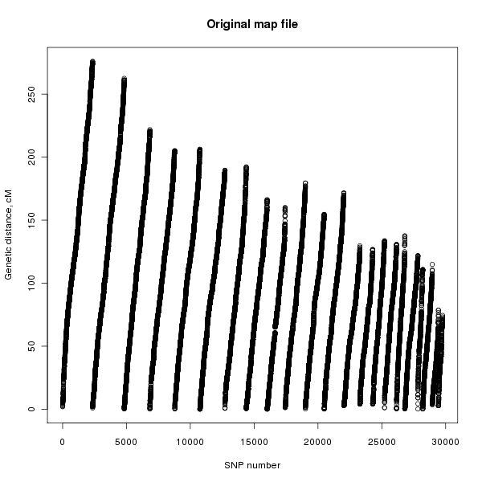
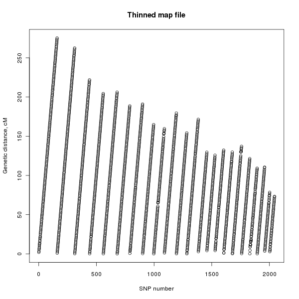

4 MapThin Examples
Suppose we have a map file, myfile.map, with 29753 SNPs and we wish to create a thinned map file with only 2000 SNPs (very thin for this example) then we would type the following.
./mapthin -s 2000 myfile.map mythinnedfile.map
This will create output similar to the following.
MapThin: Thinning your map files!
------------------------------------------------------------
Copyright 2011 Richard Howey, GNU General Public License, v3
Institute of Genetic Medicine, Newcastle University
Parameters:
Input file: myfile.map
Output file: mythinnedfile.map
Total SNPs to keep: 2000
Statistics:
Total number of SNPs in original file: 29753
Number of SNPs in thinned file: 2000 (6.72201%)
Number of SNPs with missing genetic distances: 7
(Written to file missingGeneticDis.txt)
SNPs per cM: 0.577851
Mean genetic distance between SNPs: 1.71345 cM
St. dev. of genetic distance between SNPs: 0.26895 cM
Range of genetic distance between SNPs: (0.044079, 4.86245)
MapThin will output some information on the thinned map file and will also report any SNPs in the map file with missing genetic distances. Figure 1 shows the genetic distances of the SNPs in the original map file and figure 2 shows that of the thinned map file.

Figure 1. Plot of the genetic distance against the SNP number for the original SNP file.

Figure 2. Plot of the genetic distance against the SNP number for the thinned SNP file.
Other Example Commands
-
Keep 2.6 SNPs per cM.
./mapthin -t 2.6 myfile.map mythinnedfile.map
-
Keep 45.6% of the SNPs in the map file.
./mapthin -p 45.6 myfile.map mythinnedfile.map
-
Only output SNP names to the thinned map file.
./mapthin -n myfile.map mythinnedfile.map
-
Keep 5.4 SNPs per
 base pair position of the SNPs in the map file.
base pair position of the SNPs in the map file.
./mapthin -b 5.4 myfile.map mythinnedfile.map
-
Keep 23.7% of the SNPs in the map file using base pair position instead of genetic distance.
./mapthin -b -p 23.7 myfile.map mythinnedfile.map
-
Keep 4500 of the SNPs in the map file using base pair position instead of genetic distance.
./mapthin -b -s 4500 myfile.map mythinnedfile.map

{kind=link}
{kind=link}